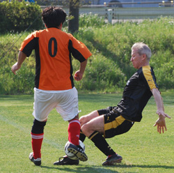
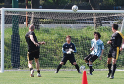
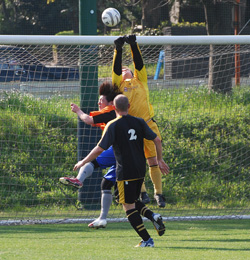
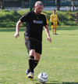

|
Todoroki, Saturday 11th April
Grass, Grass, Grass, what else could we play on when faced with the Stoneds? A beautiful day awaited us at Todoroki grass pitch, sadly we found the pitch to be slightly narrower than usual due to some reseeding, the pitch looked like it had gone on some kind of crash diet, long and really thin. Still it was a grass pitch and its silky surface was great to play on!
Stoneds started the match with 9 players and keen to take the advantage the Panthers took shots from all ranges, long, short, and medium I guess! headers, volleys, but we couldn’t quite get the ball in the net. We passed the ball around well but the width of the pitch threw our corners and throw ins off a little. A couple of balls were spotted going into orbit from a corner, gladly we got the balls back if a little scortched. The first 25 minutes was played in the Stoneds half, with them pinned back in defense due to their numbers. Finally, Ma with some interplay from Alan at the back got the ball into the middle and shot to score the first goal of the game. Shortly after Shotaro pounced on a parried shot and scored the second.
Kev Gray had a stormer down the right, occasionally supported by myself, I would say ably, but that would be a lie!! Still, Kev got the ball down the wing plenty of times and the ball was in the box plenty of times due to some Beckham like crossing. We only had to break out the air raid sirens after half time when Kev decided to launch another ball into the stratosphere, odd really, it seemed to have been Kei’s job in the first half!!
Panthers looked dominant in the first half and a cross came in from the left from Ma, to be nodded down by Rick, which was sweetly struck by Shotaro again to score his second. 3-0 at half time and we were pretty happy to go and have some water and a little shade!
Sadly the rest of the Stoneds turned up and they had plenty of the ball in the second half and played some nice one touch football, we stayed strong though and defended well. Ma using some extraordinary skills got round the entire Stoneds defense and the keeper, we were all cheering as the ball headed towards the goal from a left footed shot, which then hit the left post with a thud. We should have been 4-0 up but it was not to be that time. Luckily Shotaro did it again, twice to put us 5-0 with about 5 minutes to go.
Our illustrious former captain and manager decided the best way to deal with wingers was to flatten them after a dubious looking challenge, the poor guy under him looked something like wiley coyote after a rock had landed on him. Unfortunately the squashed midfield wasn’t able to pop himself back to shape and looked distinctly flat for the next few minutes.
The Stoneds not wanting to rest on their laurels took advantage of some dubious team rotations which had two midfielders and myself in defense. A lack of concentration and some mild sun stroke at the back led the Stoneds to score from a well placed corner.
Another cross in should have been cleared by a header, but found its mark on the left of the pitch, the striker finished cleanly to bring the score to 5-2.
Still that’s ten game unbeaten for the Panthers and still seeking that elusive promotion position.
Report by Lee Rawlinson (the Stalwart of defence - seen left)
|